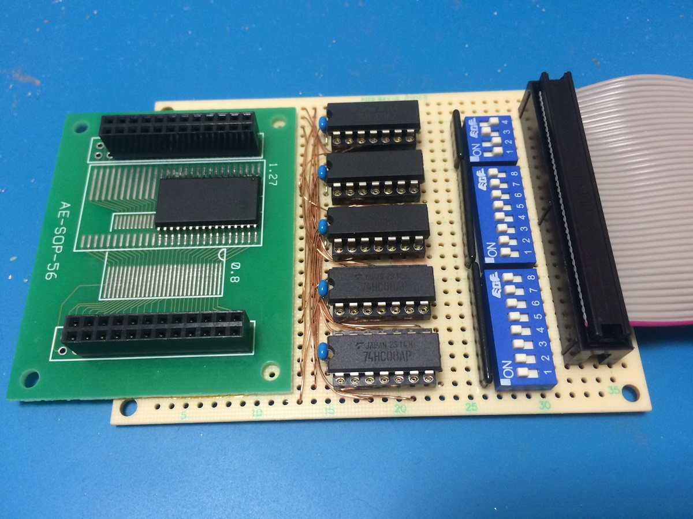
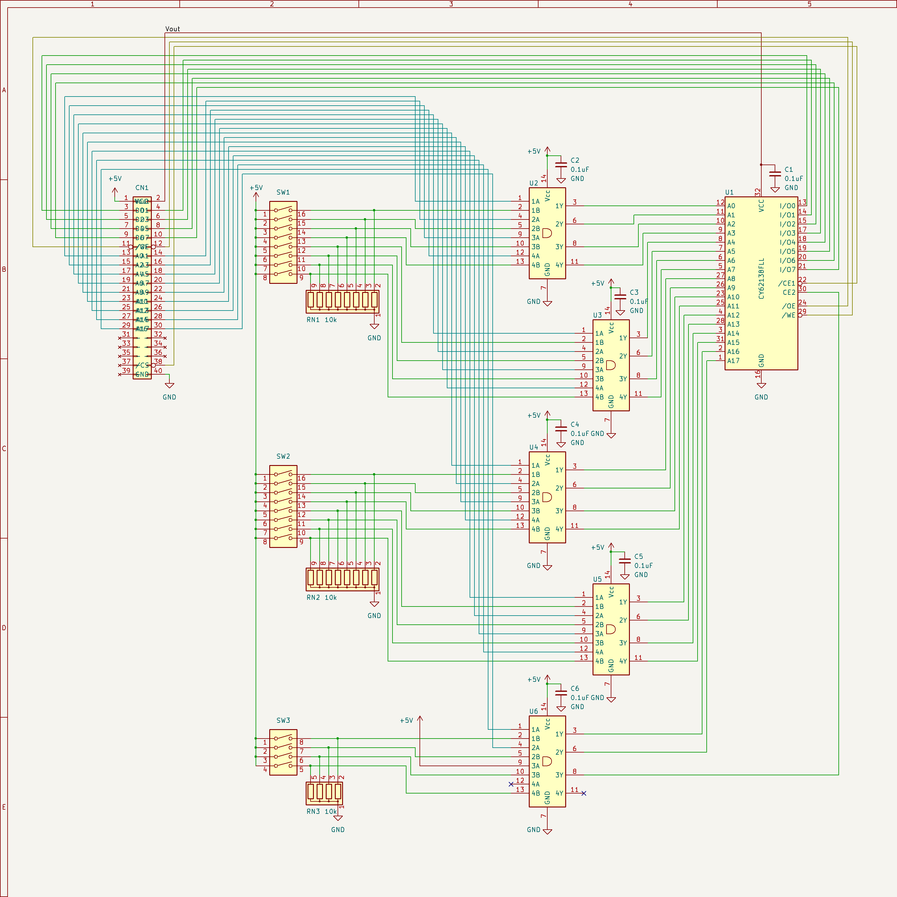
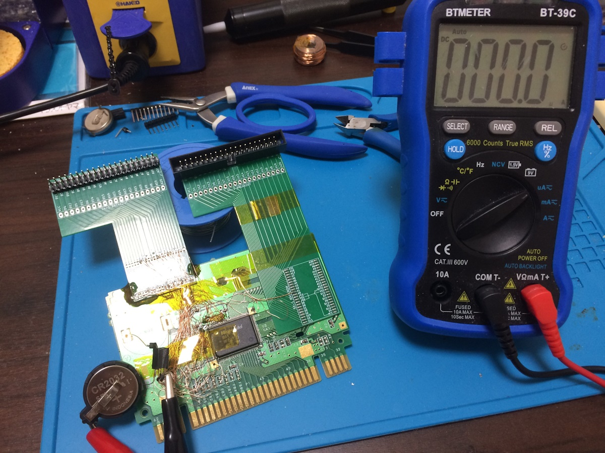
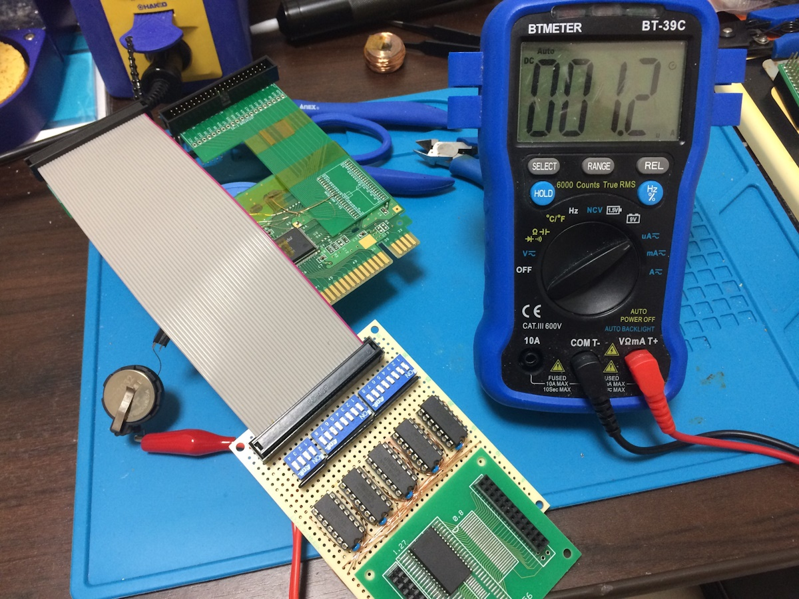
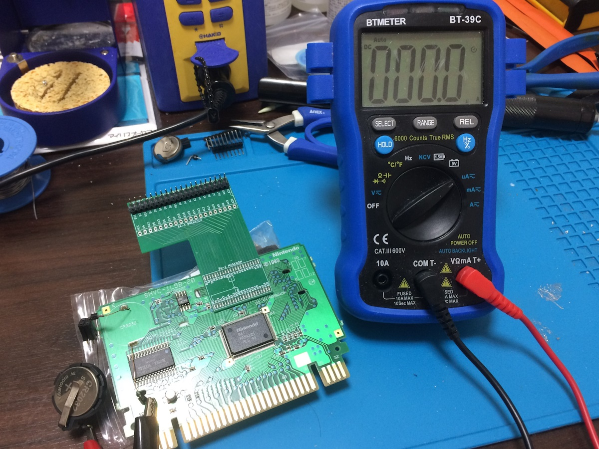
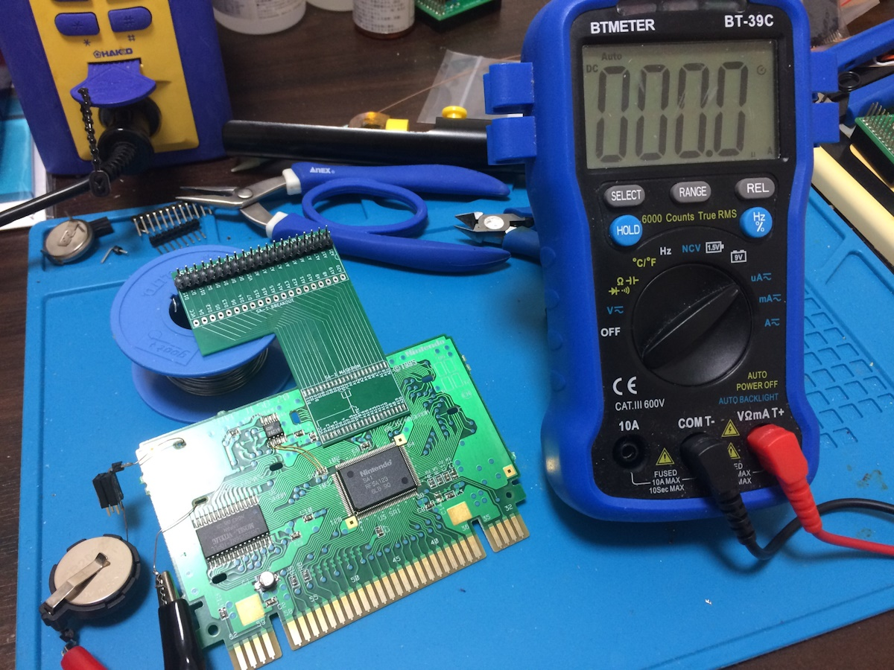

SA-1のバッテリーバックアップで電池を無駄に消耗しよう。
SA-1 Backup
SA-1のカートリッジにはバッテリーバックアップできる2つのメモリが存在します。
BW-RAM Backup
バッテリーバックアップと言われたら思い浮かぶ方法で、基板に取り付けられたSRAMをバックアップする方法です。
SA-1のカートリッジにおいては「BW-RAM」と呼んでいます。
SA-1カートリッジではSA-1 CPU側からSNESメインメモリが見えないため、BW-RAMを普通のメモリとして使用したり、
Character conversion DMAやBitmap image projectionによる画像データ変換の作業領域として使用したりしています。
そのため、バッテリーバックアップをしていなくても揮発するワーキング用メモリとしてBW-RAMが搭載されています。
I-RAM Backup
SA-1には2KiBのRAMがチップ内に内蔵されており、「I-RAM」と呼んでいます。
I-RAMはBW-RAMよりもアクセス速度が速いので、よく使うデータはI-RAM側に置かれます。
Development manual Book II, Section 1 1.2 System configurationでは、SA-1チップとバッテリーが接続されている図があります。
これはI-RAMがバッテリーバックアップできることを示していますが、ほとんどのゲームではBW-RAMのバッテリーバックアップがあるため、
I-RAMを電源断で揮発するワーキング用メモリとして使用しています。
…ただ1つのゲームを除いて。
カートリッジ基板の型番
SNESのカートリッジ基板に刻印された型番を見ると、おおよそどのような構成であるかがわかります。
例えば、「SHVC-1A0N」の場合はROMチップが1つ(1), LoROM(A), SRAMなし(0), バッテリーバックアップなし(N)、
「SHVC-3J3M」の場合はROMチップが3つ(3), HiROM(J), SRAM 8KiB(3), バッテリーバックアップあり(M)です。
いろいろ例外はあると思いますが、概ねそんな感じです。
近年の偽物カートリッジはここら辺の型番が実際のマッピングとあっておらず詰めが甘いなあと思ったりすることもあるのですが、今後どんどん巧妙化されていってしまうのでしょうか。
SHVC-1L0B-01
SA-1 I-RAM Backupのカートリッジは、BW-RAMが搭載されていないため、基板の型番は「SHVC-1L0B」になります。
ROMチップが1つ(1), SA-1(L), SRAMなし(0), バッテリーバックアップあり(B)を意味します。
「パチスロ物語 パル工業スペシャル」、それがSA-1 I-RAM Backupを取り扱う唯一のタイトルです。
説明書にはスーパーアクセラレーターチップを搭載し、今までのパチスロゲームになかった2人同時対戦や美しいグラフィックを実現しています。
と記載がありますが、残念ながらSA-1特有の機能は使用しておらず、バックアップメモリのコントローラでしかありません。
SA-1 CPUを起動しようとするルーチンやリセットベクタの残骸はありますが、肝心の起動する処理が存在しません。
このゲームのプログラムの変なところを挙げだすとキリがなくなって本旨から逸れるのでほどほどに。
SRAMが搭載されていないにも関わらず、電池が搭載されている一見不思議な基板です。
配線を追うと、電池は電源管理IC MM1026を経由してSA-1チップの100, 101ピンに接続されています。
| MM1026 pin | SA-1 pin |
|---|---|
| 5: /CS | 100 (GND) |
| 6: Vout | 101 (VCC) |
※括弧内はSHVC-1L5B-20の場合の接続先
I-RAM Backup + BW-RAM Backup
公式カートリッジではI-RAMまたはBW-RAMどちらか片方のバッテリーバックアップしか実現されませんでしたが、I-RAMとBW-RAMの両方をバッテリーバックアップにすることはできるのでしょうか。
実現するには二つのアプローチがあります。
- I-RAM Backup基板にBW-RAMを取り付ける
- BW-RAM Backup基板でI-RAM Backupを有効化する
I-RAM Backup + BW-RAM
どうして大変なパターンを先に選んでしまったんですか。
SHVC-1L0B-01にBW-RAM用のSRAMを接続します。
言ってしまえば簡単ですが、基板にはBW-RAM関係の配線パターンが出ていないため0.5mmピッチのICの根元に30本近いジャンパー線をはんだ付けします。
しました。
BW-RAMに対していくつかのテストをしたかったため信号をシェルの外に引っ張り出すだけになっています。
最初は切断したIDEケーブルに直接繋いでいたのですが、ケーブルの反対側のコネクタ部分が断線しました。
引っ張ってコネクタから取り外す方が楽なんで…。
ケーブルが交換できるように、余っていた変換基板に繋げました。
SHVC-1L0B-01はマスクROMを縦方向に配置するため、ROMブレークアウト基板はまた新規で起こしています。
BW-RAM基板
SA-1チップにSRAMを直接接続してもよかったのですが、BW-RAMに対して実施したいテストがあったためBW-RAM基板を作成しました。
以下のことができるようにしました。
- メモリサイズの制御: 1byte～256KiB（SA-1規格上最大）をDIPスイッチで制御
- 信号のプローブ: ロジックアナライザーを接続できるようにピンソケットを取り付け

回路図（画像クリックで別タブで開きます）
BW-RAMのアドレスバスを、プルアップしたDIPスイッチの信号と7408でANDマスクする基板です。
SRAMにはCY62138FLLを使用しました。
完成
ROMも繋ぐとこんな感じ。
※コネクタ断線前のIDEケーブル直接接続当時のもの
I-RAM enable
SHVC-1L5B-20のI-RAM Backupを有効化します。
こちらはBW-RAMがもともと載っているので追加部品はナシ。
この基板ではI-RAM BackupのピンにSNES本体から供給されるVCC, GNDが接続されています。（当記事冒頭の表参照）
電池からカートリッジ全体に電源が供給され続けないように、コンデンサC6の取り外しとパターンカットをします。
コンデンサの跡はジャンパ線のパッドとして利用できるので、その下をパターンカットするのがおすすめ。
C6のパッドとMM1026のVout, /CSを接続します。
これだけで完成です。
I-RAM Backup + BW-RAMよりもはるかに簡単ですね。
今回はやっていませんが、お好みでSRAMを交換して容量拡張をしてもよいでしょう。
動作確認・測定
動作確認
I-RAMとBW-RAMのメモリ内容を簡易的に調べるテストROMを作りました。
固定の値をそれぞれのメモリに書き込んで、再度起動されたときに元の値と比較することでバッテリーバックアップされているかどうかやどれくらい揮発しているかを調べます。
電池を取り付けた状態で、10分電源断をしてもI-RAM, BW-RAM共に完全一致で保持されていたため、両方がバッテリーバックアップされるようになったと判断しました。
(補足) 電池を取り外した状態での各メモリの値保持期間について
SHVC-1L0B-01のI-RAMは未給電でも6分半は値が保持されます。
SHVC-1L5B-20のBW-RAMは未給電で0.5秒以内には揮発が始まります。
また、DIPスイッチによってBW-RAMの容量を縮小できていることも確認できました。
（画像「BW-RAM SIZE」 $040000→$000100）

消費電力測定
某所で「消費電力は？」と聞かれてしまったので。
| 基板 | (変更なし) I-RAM Backup | (変更なし) BW-RAM Backup | (変更あり) I-RAM Backup + BW-RAM Backup |
|---|---|---|---|
| SHVC-1L0B-01 | 0.0 [uA] | N/A | 1.2 [uA] (SRAM: 256KiB) |
| SHVC-1L5B-20 | N/A | 0.0 [uA] (SRAM: 32KiB) | 0.0 [uA] (SRAM: 32KiB) |
存在意義
エミュレーション
エミュレータではどちらのメモリがバッテリーバックアップされているのかをROM内のカートリッジ情報から推測することになります。
残念ながらカートリッジ情報のフォーマットでは「I-RAM, BW-RAMの両方バッテリーバックアップ」を表現することができません。
higanのbmlファイルのように外部からの追加情報が必要です。
メリット
I-RAM, BW-RAMの両方バッテリーバックアップのメリットは一切ないです。
こんなことをやっていますが、有限なハードウェアの個体数が減ることを私は望んでいません。
さいごに
諸注意
機器の改造・破壊は自己責任の下おこなってください。
当記事によって発生したいかなるトラブル・損害に対して責任を負いかねます。
更新履歴
- 2025/12/30 初版作成